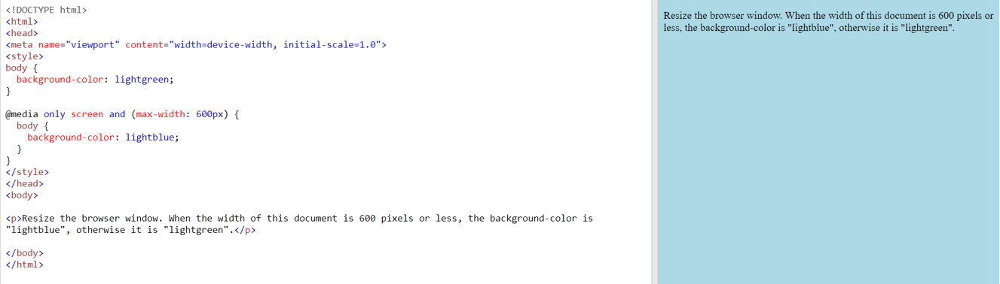

Diseño web responsivo
Es un Formato de programación que permite ajustar un sitio web automáticamente a las características de los dispositivos de sus usuarios.
- Prefieren los formatos verticales y priorizan informacion
- Implementan las funciones de los dispositivos y aprovechan la iteracion con los usuarios
- Automatizan labores de dise;o y programacion
Los diseños responsive:
La principal característica del diseño responsive es su flexibilidad. No obstante, existen otras propiedades importantes a considerar.
Viewport
El viewport es el área visible de la página, esta varía dependiendo del tamaño del dispositivo en el que esté el usuario, puede ser más grande o más pequeño.
Se debe incluir la siguiente etiqueta de meta en todas las paginas web
Con esto le indicamos al buscador qué hacer cuando el tamaño de la pantalla cambia.
Con width=device-width establecemos cual será el ancho de la/s página/s, mientras que con initial-scale=1.0, establecemos el zoom de la página cuando recién la cargamos.
Media Query
Es una técnica usada en CSS3. Se usa para encapsular una serie de propiedades que se van a cumplir solamente si la condición que le acompaña es verdadera.
Ejemplon 1: En este ejemplo, cuando el ancho máximo de la página es 600 o mayor, la página se verá de color azul.
